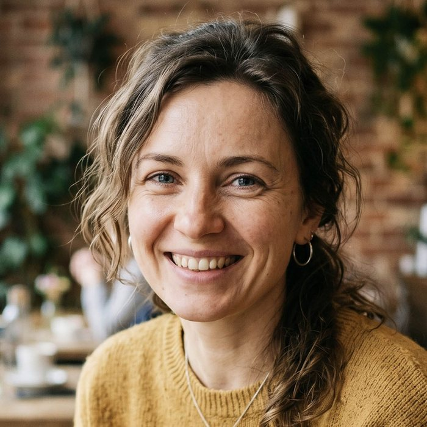

"
We rented a flower wall for a wedding in Toronto. Everything looked exactly like it did in the photos on the website, which was very important to us. Many guests came up close and were amazed by how realistic the flowers looked. In the evening, there was constantly someone taking photos by the wall.
Isabella
Wedding